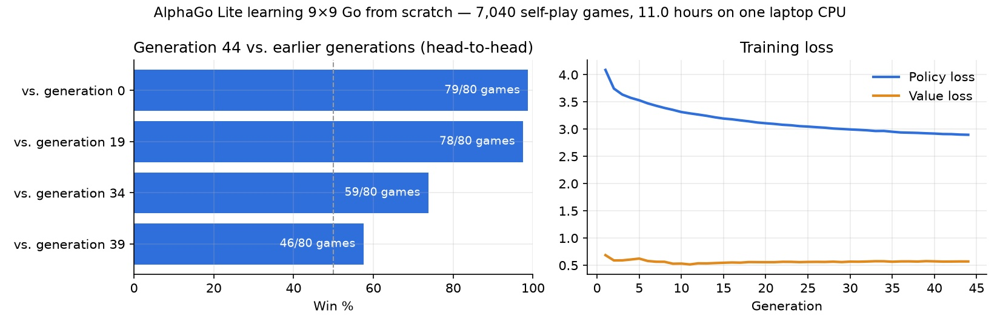

Self-play RL
A Go engine that taught itself on my laptop
The AlphaGo Zero recipe, scaled down to 9×9 and one CPU: 7,040 games against itself.
AlphaGo Zero learned Go with no human games at all. It played itself, learned from those games, and played itself again. I wanted to see how much of that idea survives on one laptop.
Not much compute, so a smaller board: 9×9 instead of 19×19. Same recipe.
The loop
There are three steps, repeated.
Play. The current network plays against itself. Before a move it runs a tree search, up to 160 imagined lines of play, guided by the network's own guesses about good moves and who's winning.
Learn. The network trains on those games. It learns to predict the moves the search picked and the game's final result. The search is a bit smarter than the raw network, so the network keeps chasing a slightly better version of itself.
Check. The new network plays 40 games against the previous one. The result goes into a running score, so I can see whether it's actually getting stronger.

What 11 hours buys
44 generations. 7,040 games against itself. About 11 hours on an 8-core laptop CPU, spread over four sittings.

The final version beat a random network with search 79 games out of 80. It beat the first version I released 78 out of 80, the second 59 out of 80, and a version from just five generations earlier 46 out of 80. Still improving, but the steps get smaller.
What went wrong
One of the training sittings stalled for two hours and produced nothing. Now, if a step returns nothing for 40 minutes, the workers restart and try again. It's a boring fix, and the one I'm happiest about.
The other lesson was about honesty. The loss curve looks great early, then flattens. The only way to know if the engine is actually getting stronger is to make it play its older selves. Every claim above comes from those games, not the curve.
Try it
It runs as a Mac app and in the browser, with the same network in both. You can play it here and watch what it's thinking. It is not AlphaGo.